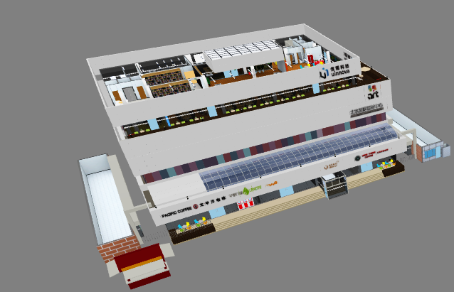

Concept Guide¶
Module and Scene¶
There are two basic and import concepts in Momoda: module and scene.
Module¶
Module is polygon representation of object. 3D object could presents something from real world, concept or just your imagination.
Module in Momoda shares the same of idea of 3D object in general, those 3D object could be organized and put into 3D scene like Lego.
Momoda also provides ‘official’ module library and could be used for free during 3D scene creation. User could also leverage uinnova’s profession service to create customized modules. Besides, Momoda also provide a 3DSMax plugin which could upload 3D object created in 3DSMax to Momoda’s module library, and user could create and use their own module using this plugin, which make Momoda very extensible in term of module creation.
Scene¶
Scene this one of the basic concept in Momoda. By use momoda’s free drawing studio, user can place , combine and layout 3D modules/objects into a scene in drag and drop fashion. Typical scene could be campus, a factory, a harbor, and any another things you may think of. We call them “Momoda Scene”.
Momoda scene are stored in Momoda Cloud, which could be opened by own later on for editing, preview, or API debugging. Momoda scene can also be download and running locally as “Momoda Offline Edition” (may need purchase license issued by uinnova inc.).
Module Library¶
There are three common objects in right navigation bar of momoda studio: module, texture and function.
- Module
Objects like building, car, people, desk, etc. User could also upload their custom objects through Momoda 3DSMax plugin.
- Texture
Textures to cover the surface of object, also supports use custom texture upload by user.
- Function
Effects such as fire, rain, flash, or assistant function such as drawing line, pipeline, or text. Function are system build-in and do not supports user upload at this time.
Scene Levels¶
There are four level in Momoda scene: campus, building, stories and rooms.
- Campus
Upmost level of a scene.

- Building
Buildings (do not includes building facade)
{kind=link}
- Stories
{kind=link}
- Room
{kind=link}
API Developement¶
Mododa supports online development via Momoda API developing web page.
Create New API Project¶
There a two pane in developing web page, left pane is for script editing, right pane is for running scripts in 3D scene. To begin a new API development project, visit the Momoda API developing web page, input the ID of target 3D scene, then click New button.
Deploy API Project to Scene¶
To includes API script into your own scene, simply copy all the script source code and paste to the text box of My Projects —> Target Scene —> Configure Scene.
Keyboard Shortcuts¶
Below are keyboard shortcuts in Momoda API debug page:
Ctrl+EnterRun ScriptCtrl+RReset SceneCtrl+/Comment/Uncomment source code
API Namespace¶
Momoda API functions are grouped in following namespaces:
| Namespace | Description |
|---|---|
| camera | camera control |
| object | create, search or modify objects in 3D scene |
| gui | manage user interface in 3D scene |
| BaseObject | control existing objects |
| ScriptObject | associate scripts on existing object |
| util | common functions |
| input | keyboard and mouse events |
| console | management console |